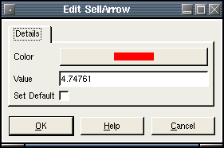

SellArrow
Description:
A small down pointing arrow. Commonly used to indicate a sell point on a chart.To create a SellArrow, select draw mode from the main toolbar and right click with the mouse on the chart you wish to apply it to. This can be either the main chart area or any of the indicators that appear in the indicator chart area. Select "New Chart Object" from the popup menu and select SellArrow from the menu.
After selecting the menu option, the mouse
pointer will change
to a hand pointer. To place the SellArrow on the chart the user must
click the left mouse button. The object
will then appear on the chart.
Selecting:
In order to edit the SellArrow, the user must first select it. First, the user must be in draw mode. Select the SellArrow by left clicking with the mouse anywhere on the object. The object will be selected when a "grab box" appears just below the SellArrow like this:You then can right click the mouse for a context menu for the object. You may also double-left click on the object to bring up the edit dialog directly. There are three options when a SellArrow is selected. Edit, Move and Delete.
Edit:
The sell arrow settings are defined as follows:- Color - The color of the arrow.
- Value - The value point of placement on the chart.
- Set Default - If checked, all settings will default to the current values when new ones are created.
